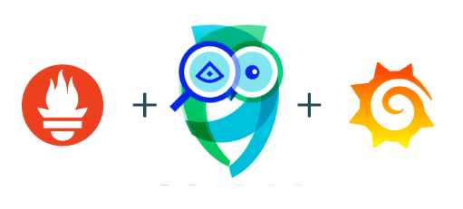
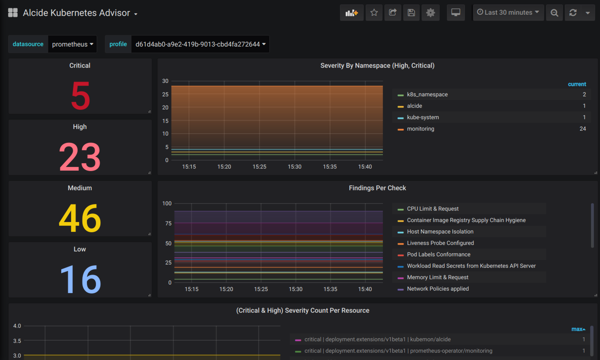

In this tutorial we will learn how to integrate Alcide Advisor with Prometheus and Grafana in order to gain security observability of your Kubernetes cluster hygiene and risk by expsoing Alcide Advisor's findings as security metrics.

Alcide Advisor is an agentless Kubernetes audit, compliance and hygiene scanner that's built to ensure a friction free DevSecOps workflows. Alcide Advisor can be plugged in early in the development process and before moving to production.
With Alcide Advisor, the security checks you can cover includes:
- Kubernetes infrastructure vulnerability scanning.
- Hunting misplaced secrets, or excessive privileges for secret access.
- Workload hardening from Pod Security to network policies.
- Istio security configuration and best practices.
- Ingress Controllers for security best practices.
- Kubernetes API server access privileges.
- Kubernetes operators security best practices.
- Deployment conformance to labeling, annotating, resource limits and much more ...
For this tutorial you will need a Kubernetes cluster with enough permissions to deploy resources into it.
- Install and Set Up kubectl.
- Install Minikube, or any working Kubernetes Cluster
- Prometheus Operator
- Alcide Cloud Account

In order to run Alcide Advisor Scan, we will need to onboard your Kubernetes cluster into your Alcide Cloud Account
- Login to your account: https://yourcompany.cloud.alcide.io
- On the left hand side menu, click on Create Data Center/Cluster
- Choose Install Alcide Advisor as SaaS
- Follow the steps in the UI wizard.
At this point you should be able to see your cluster, worker nodes, and workloads, in the Infrastructure View

In order to expose metrics through Alcide's deployment, we need to enable Alcide Advisor prometheus metrics endpoint.
This boils down to setting a parameter through an environment variable:
kubectl set env deployment/kubemon -n alcide ALCIDE_ENABLE_METRICS_ENDPOINT="true"
Now let's check that our pod exposes the metrics, Run this:
kubectl port-forward -n alcide $(kubectl get pods -n alcide -l app=kubemon -o custom-columns=:metadata.name --no-headers) 6666:6666
In your browser, go to http://localhost:6666/metrics (may take few seconds to become available)

In order for Prometheus to scrape our security metrics we need to deploy a ServiceMonitor object in our cluster as well as Service that directs the ServiceMonitor to Alcide Advisor metrics endpoint.
kubectl apply -f https://raw.githubusercontent.com/alcideio/advisor/master/monitoring/grafana/advisor-servicemonitor.yaml

Add Alcide Advisor Reference Grafana Dashboard
Login into your Alcide cloud account https://yourorganizationname.cloud.alcide.io/advisorProfile
Run a scan using one of the profiles by:
- Click on the 3-dots button of the profile you would like to scan
- Click Scan Now menu option
Grafana Screen Shot

CI+CD Integration samples
See https://github.com/alcideio/pipeline
Alcide Kubernetes Advisor | Prometheus + Grafana
See https://github.com/alcideio/advisor/tree/master/monitoring/grafana